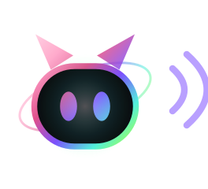
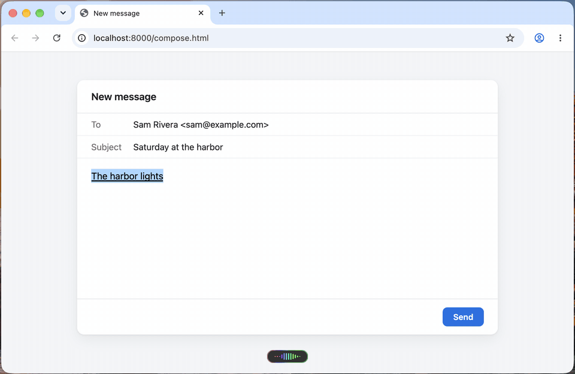
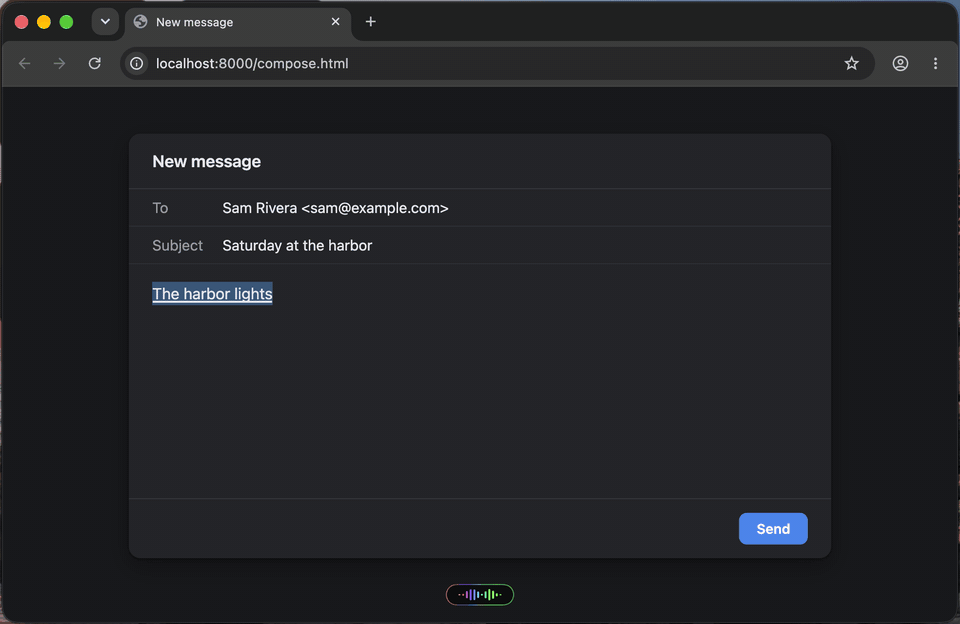
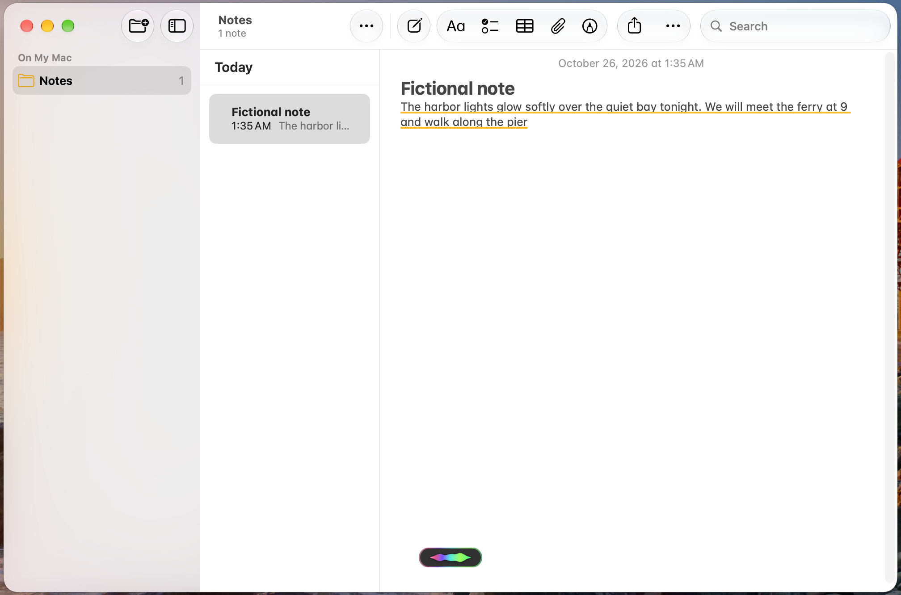
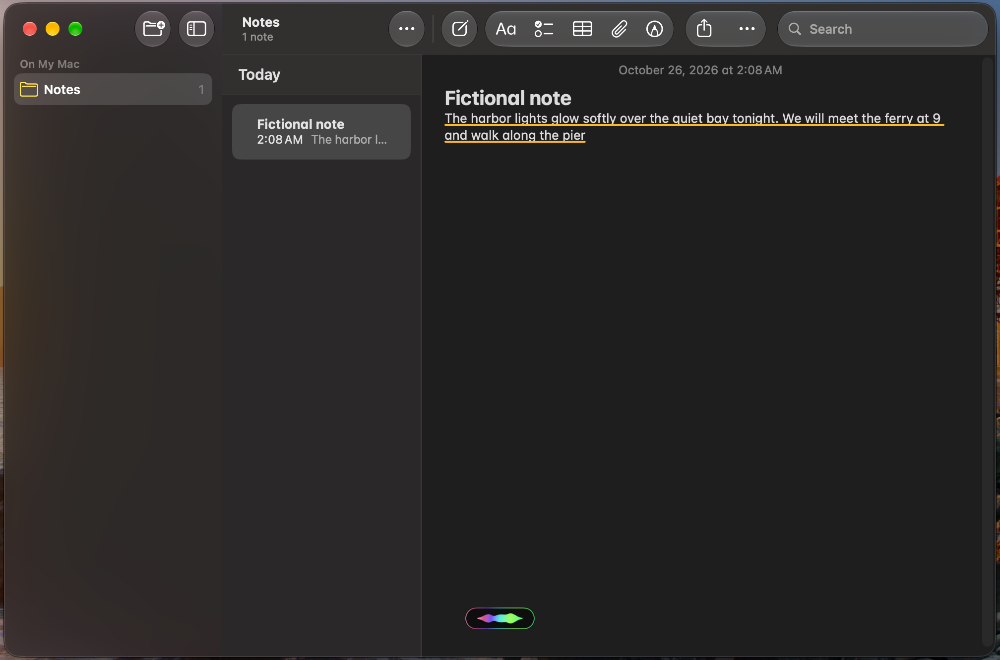
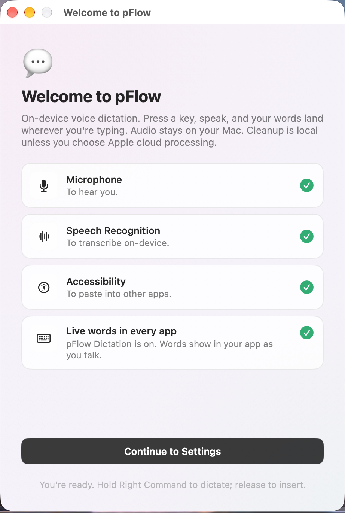
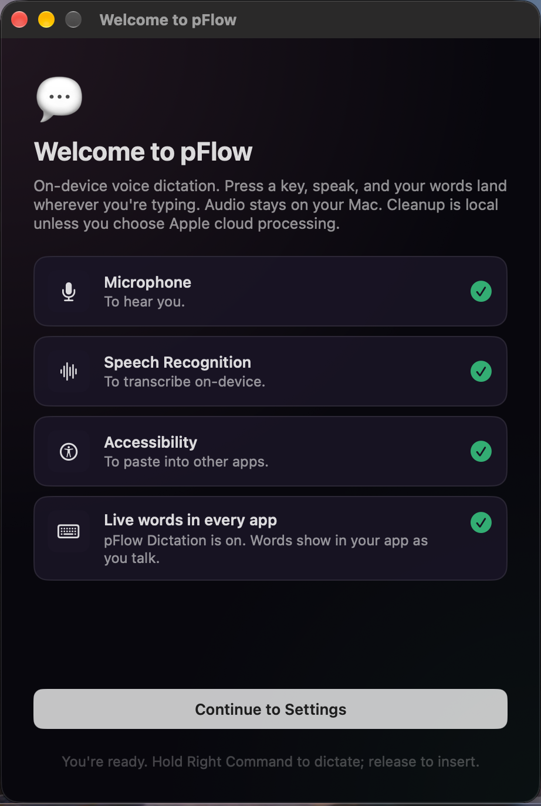
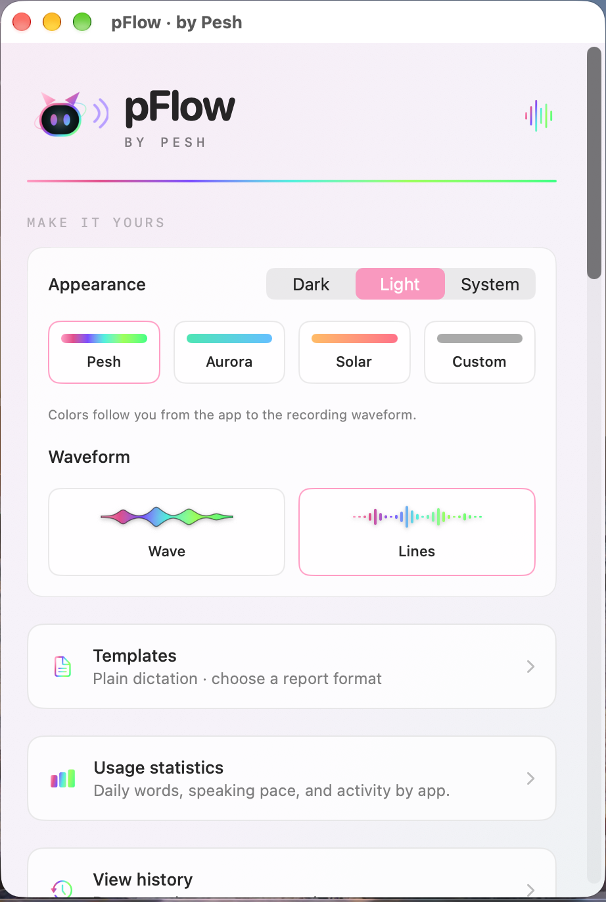
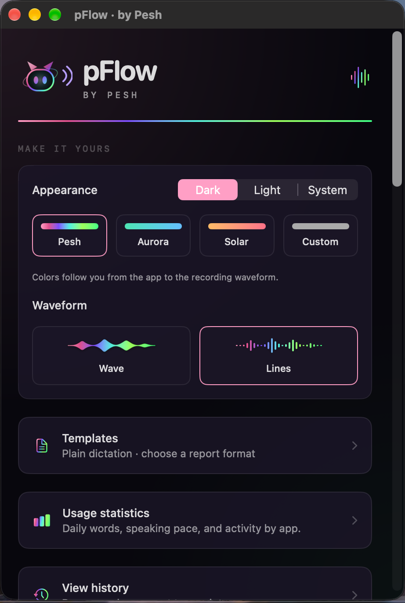

pFlowHold Right Command and talk. Your words appear in the app you're typing in while you speak, the way Apple Dictation shows them, in Chrome, Safari, Messages, Notes, VS Code and more. Let go, and pFlow puts in the finished, punctuated text once.
Download pFlow for Mac

Your words show in the field you're typing in, not in a separate window. Web apps and Electron apps like VS Code too.
The first words show about 1.2 seconds after you start talking.
Your speech is recognized on your Mac. No account, no servers, no tracking.
MIT licensed. No trial, no weekly word cap, no ads. Read the code on GitHub.
Never types into password fields. If you click or switch apps mid-sentence, it stops and keeps your words in History.
Dictionary, templates, history, per-app stats, and a small capsule with a Wave or Lines waveform in your colors.
Paid dictation apps charge for this. Wispr Flow Pro is $15 a month, or $12 a month billed yearly, and its free plan stops at 2,000 words a week on desktop. Superwhisper's Pro features are a paid plan too. pFlow shows your words live in every Mac app for free, and its code is open for anyone to read.
Prices from wisprflow.ai/pricing and superwhisper.com, checked October 25, 2026.

Use it: hold Right Command and talk, let go to finish. Double-tap Right Command to keep talking hands-free, and tap once to stop.




Yes. pFlow is free and open source under the MIT License. There is no account, no subscription and no word limit.
Apple Silicon Macs with macOS 27 or later.
Once you add pFlow Dictation, your words show as you talk in the apps you type in, including Chrome, Safari, Messages, Notes and VS Code. A field that can't show them gets pFlow's small preview, and the finished text still goes in when you stop. pFlow never types into password fields.
No. Speech is recognized on your Mac, by Apple's on-device speech engine or by Whisper if you choose it. pFlow has no account, no servers and no tracking. Cleanup uses Apple Intelligence on your Mac when it's available.
Wispr Flow Pro is $15 a month ($12 a month billed yearly) and its free plan stops at 2,000 words a week on desktop. Superwhisper's Pro features are a paid plan. pFlow is free, open source, has no word limit, and shows your words live in the app you're typing in. Prices checked October 25, 2026.
pFlow for Windows is in testing. Test builds are on the GitHub releases page.